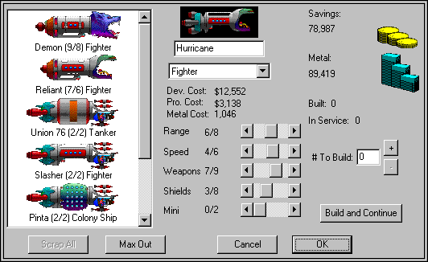

Schiffe
Schiffe entwerfen

Das ist vielleicht der coolste Teil des Spiels. Wenn Ihre Technik steigt, werden Sie anfangen wollen, fortschrittlichere Schiffe mit diesen neuen Technologien zu bauen. Das ist leicht. Stellen Sie im Dialog Schiffe bauen/entwerfen einfach die Technikstufen so ein, wie Ihr neuer Typ sein soll. Sie bewegen dazu nur die Schieberegler, um die Eigenschaften des neuen Schiffs festzulegen. (Das rechte Ende des Schiebereglers entspricht immer Ihrer aktuellen Technikstufe.) Wenn Ihr Schiff so ist, wie Sie es wollen, bauen Sie einfach eines (mit der Taste +), und der Prototyp wird automatisch entworfen und gebaut.
Es gibt sieben große Schiffsklassen: Kolonieschiffe, Satelliten, Späher, Kampfschiffe, Schlachtschiffe, Tanker und Bioschiffe.
Kolonieschiffe
Kolonieschiffe befördern Menschen und kolonisieren für Sie neue Sterne. Kolonieschiffe sind unglaublich teuer, sowohl an Geld als auch an Metall. Sie kosten so viel, dass Sie nur wenige davon bauen wollen. Das, und weil Miniaturisierung ihnen nicht viel nützt, bedeutet, dass Sie bei Ihren Kolonieschiffen wahrscheinlich gar keine Miniaturisierung einsetzen wollen. Kolonieschiffe sind außerdem das Erste, auf das der Feind im Kampf schießt, also sollten Sie auch deshalb vorsichtig mit ihnen sein.
Satelliten
Satelliten sind Schiffe ohne Triebwerke. Das heißt, ihre Reichweite ist null. Satelliten sind ein billiges, wirksames Mittel, Ihre Planeten gegen feindliche Angriffe zu verteidigen. Leider können sie sich nicht bewegen; sie können nur den Planeten verteidigen, auf dem sie gebaut wurden. Satelliten sind viel kleiner als normale Schiffe, sodass es nicht so viele Treffer braucht, sie zu zerstören. Natürlich braucht man zum Bau von Satelliten auch längst nicht so viel Metall wie für Kampfschiffe. Hat ein Planet Satelliten, hat er auf der Sternkarte einen Ring um sich.
Späher und Kampfschiffe
Späher und Kampfschiffe sind Ihre Grundschiffe. Der Unterschied zwischen Spähern und Kampfschiffen ist ein Kompromiss zwischen Triebwerken und Waffen. Späher können eine Reichweite haben, die zwei Einheiten über Ihrer Reichweitentechnik liegt. Leider liegt ihre maximale Waffen- und Schildtechnik eine Stufe unter Ihren aktuellen Stufen. Das macht Späher ideal zum Erkunden, aber nicht besonders gut im Kampf. Spaceward Ho! setzt jeden Späher automatisch in seine eigene Flotte, damit er unabhängig losfliegen und erkunden kann. Kampfschiffe schließen sich automatisch zu einer Gruppe zusammen.
Schlachtschiffe
Schlachtschiffe sind die größten, bösesten Kampfschiffe im Spiel. Sie halten enorme Prügel aus. Sie können 30 Schüsse auf einmal abgeben. Sie kosten ein Vermögen an Geld und Metall.
Tanker
Tanker sind Kolonieschiffe, die nicht kolonisieren. Tanker tanken alle Schiffe im selben System auf. Hat eine Flotte einen Tanker dabei, tankt sie an jedem Stern, den sie besucht, automatisch auf, ohne den Stern kolonisieren zu müssen. Tankern geht nie der Treibstoff aus.
Tanker kosten weniger als ein Kolonieschiff, aber mehr als ein Kampfschiff.
Bioschiffe
Bioschiffe sind riesige Raumwesen und gar keine Schiffe. Sie kosten kein Metall, da sie rein organisch sind. Sie kosten viel Geld, und ihre anfänglichen Technikwerte liegen unter Ihren aktuellen Technikstufen. Bioschiffe tanken auch nicht wie andere Schiffe auf. Neue Arten von Bioschiffen können Sie nur durch Radikalforschung entwerfen.
Deutsche Übersetzung des Remakes, keine offizielle, des Handbuchs von Delta Tao. Die Seite auf Englisch (auf Englisch).